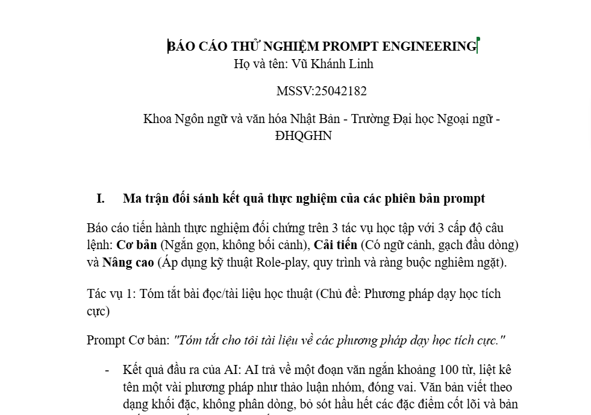
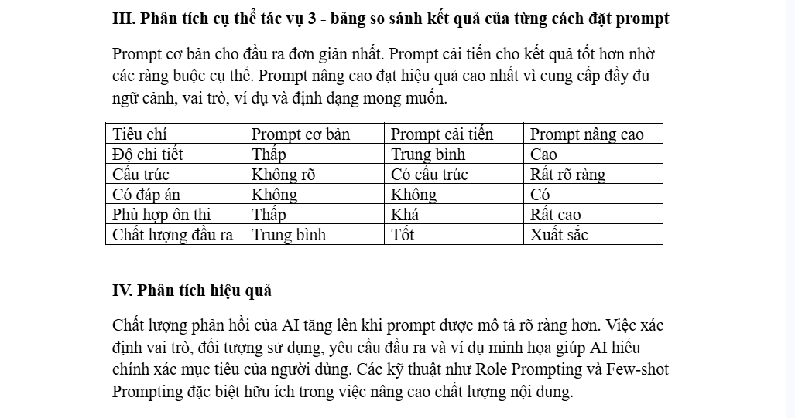

Làm quen với kỹ thuật viết prompt để khai thác hiệu quả các mô hình ngôn ngữ lớn trong học tập.
Bài tập này là cơ hội để mình tìm hiểu sâu hơn về cách các mô hình ngôn ngữ lớn (LLM) hoạt động, cũng như cách khai thác chúng một cách hiệu quả thông qua kỹ nghệ câu lệnh (Prompt Engineering).
Mình đã thử xây dựng nhiều phiên bản prompt khác nhau cho cùng một tác vụ - từ câu lệnh đơn giản, sơ khai cho tới phiên bản có bổ sung ngữ cảnh, tiêu chí rõ ràng, rồi so sánh chất lượng phản hồi nhận được giữa các phiên bản.
Qua đó mình nhận ra rằng cách mình đặt câu hỏi ảnh hưởng rất lớn đến chất lượng câu trả lời của AI, và đây là một kỹ năng cần được rèn luyện thường xuyên.

